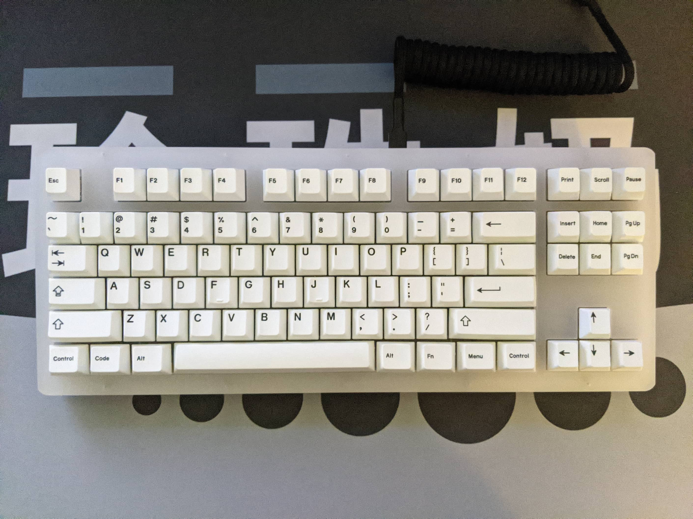
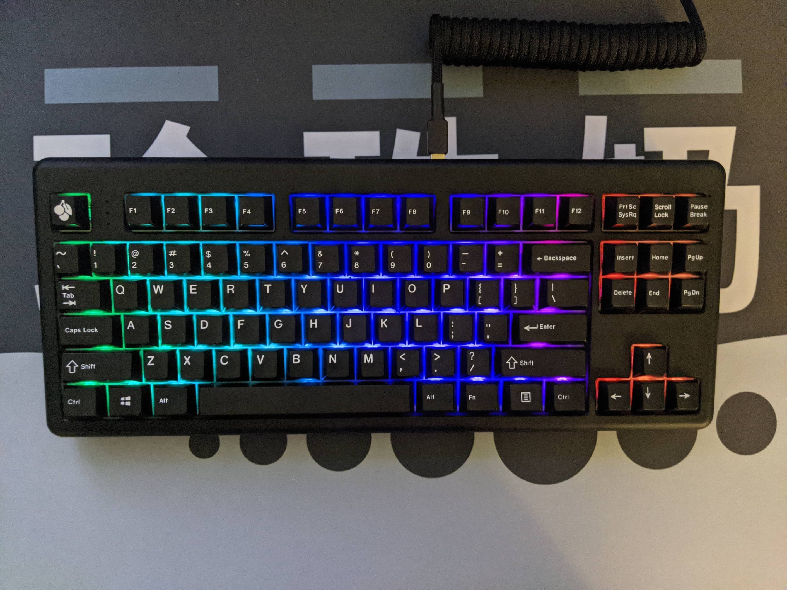
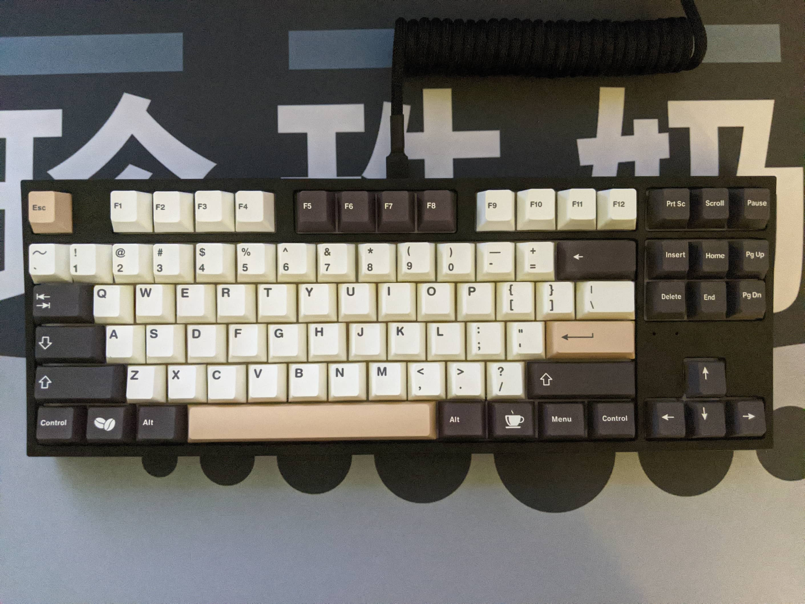
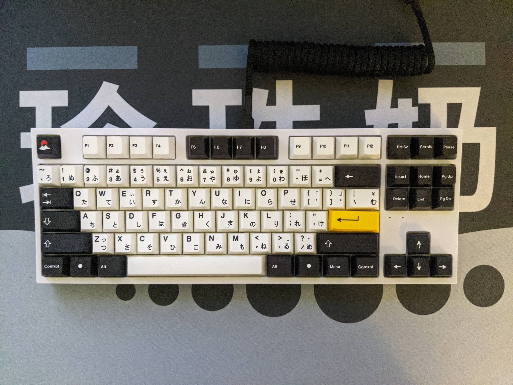
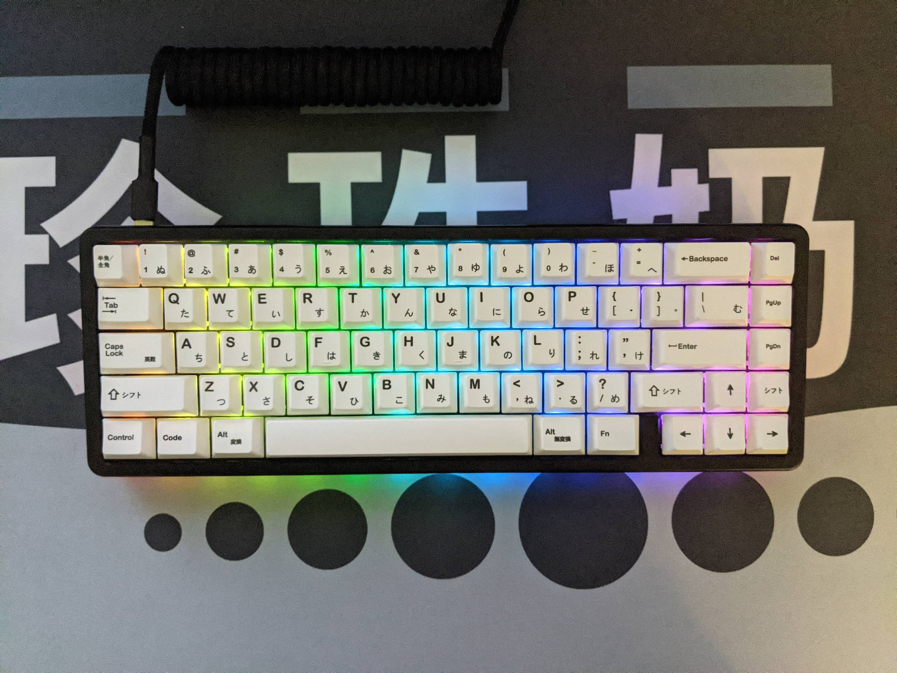
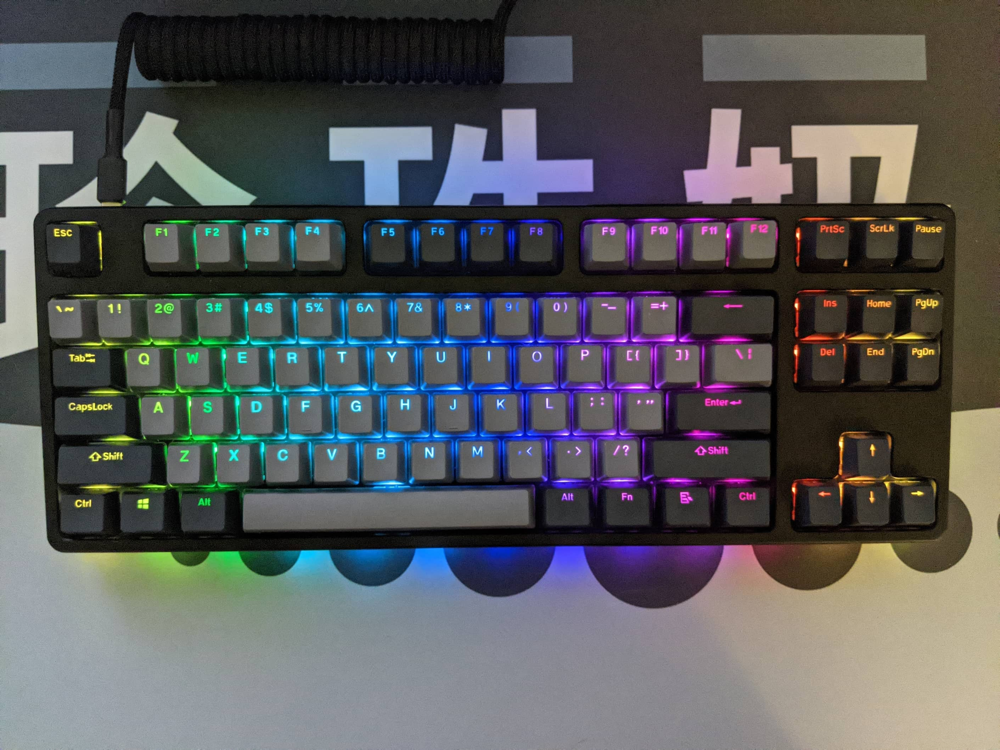

Keyboards
I went a bit crazy and bought many keyboards. I might eventually sell some of the budget ones, possibly with some switches and maybe get more custom or expensive ones. I really want the KBDFans KBD8X in Black Ink Polycarbonate with a hotswap pcb when those are released.
Xo v3
This is the Monstargear Xo v3. It has brass plate and weight with an aluminum body, built with Cherry MX Black switches that are lubed with Krytox 205g0, springswapped to 72g SLOW SPRiT springs that are lubed with Krytox 106 GPL and filmed with Deskeys films. Keycaps are a generic dyesub PBT White on Black set with Japanese sublegends and black accent keys.
Without Foam, this is the current setup
With Foam


Acrylic Xo
This is the Monstargear Acrylic Xo. It has an acrylic plate and body with RGB Cherry Red switches that are lubed with Krytox 205g0, springswapped to 75g 16mm TX springs that are lubed with Krytox 106 GPL and filmed with Kelowna films. Keycaps are ePBT x GOK BOW.
Lubed and Filmed RGB Cherry Reds Sound Test
Lubed and Filmed Gateron Ink Black V2 Test
ID87
This is the IDOBAO ID87. It has an integrated aluminum plate and body with Gateron Black Ink V2 switches that are lubed with Krytox 205g0, springswapped to 68g SLOW SPRiT springs that are lubed with Krytox 106 GPL and filmed with Deskeys films. Keycaps are GMK Red Samurai.
Lubed and Filmed Gateron Black Ink V2 Sound Test
Lubed and Filmed Cherry MX Black Sound Test

TFG Art
This is the Archon x Hansung TFG Art. It has steel/iron plate with a plastic body and a 700g rubber bottom base built with Glorious Pandas lubed with Krytox 205g0 and filmed with Deskeys films. Keycaps are ePBT Doubleshot ABS WOB.
SK87 (Black)
This is the EverGlide SK87 in Black. It has an aluminum plate and a plastic ABS body built with Gateron Cap Yellow switches that are lubed with Krytox 205g0 with stock springs lubed with Krytox 106 GPL and filmed with Kelowna films. Keycaps are Infinikey Cafe.
Stock Gateron Cap Yellow Sound Test
Lubed and Filmed Gateron Cap Yellow
SK87 (White)
This is the EverGlide SK87 in White. It has an aluminum plate and a plastic ABS body built with Kailh x NovelKeys Cream switches that are lubed with Kryxtox 205g0, 75g 16mm TX springs lubed with Krytox GPL 106 oil and filmed with Deskeys films. Keycaps are generic dyesub PBT Black on White with Japanese Hiragana sublegends and White on Black mods and a Yellow accent Enter key.

DROP ALT HP
This is the DROP ALT High Profile edition. It has an integrated aluminum plate and body with Gateron Yellow black bottom clear top switches lubed with Krytox 205g0, stock springs that are lubed with Krytox 205g0, and filmed with Kelowna films. Keycaps are a generic PBT BOW set with Hiragana sublegends.
DROP CTRL HP
This is the DROP CTRL High Profile edition. It has an integrated aluminum plate and body with Gateron Yellow KS-9 switches lubed with Krytox 205g0, stock springs lubed with Krytox 106 GPL oil and filmed with Kelowna films. Keycaps are the stock DROP CTRL doubleshot PBT shinethrough grey set.
Lubed and Filmed Gateron Yellow KS9
Stock Gateron Yellow KS9
